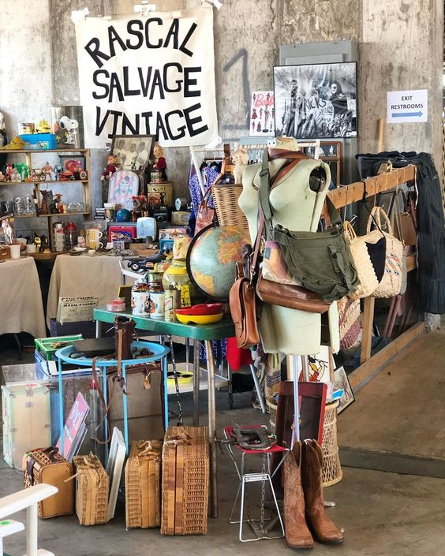
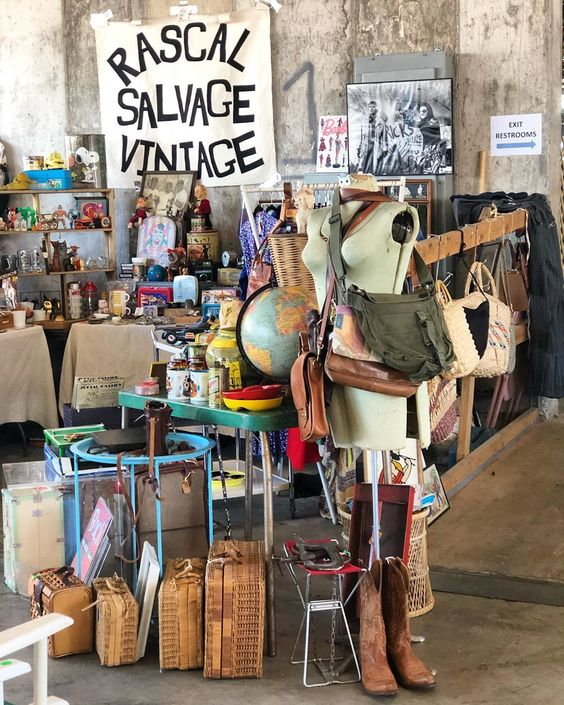

OM OS
Loppemarkedernesdag er en årlig begivenhed, hvor der afholdes loppemarkeder i alle Danmarks storbyer. For kun 150 kr kan du leje en stand, og disse penge går direkte til Den Danske Naturfond. Dit bidrag er med til at beskytte 12 kvm dansk jord. Overskuddet du tjener i din stand går til dig selv. Kom og find dit nærmeste loppemarked, og vær med til at give dine brugte ting nyt liv!
 

Sådan er du med
FIND EN STAND NÆR DIG
Vælg det område i Danmark,
som du ønsker at få en stand.

BOOK EN STAND
Tilmeld dig for 150 kr. går til
Den Danske Naturfondt.

SÆT DIN STAND OP
Medbring dine ejendele
og pynt din bod op.

TJEN PENGE
100 % af pengene du tjener,
går til dig selv.

WIN WIN!
Ved at deltage i Loppemarkedernes
dag, støtter du et godt formål og
samtidigt tjener penge til dig selv.
Find en stand nær dig
FAQ'S
En stand svarer til 4,5 kvm. Dette er opridset ude på pladsen. Der er ingen regler for hvor mange personer man er om en stand, så længe man holder sig inde for de markerede streger. Border og tøjstativer er ikke inkluderet.
Som standlejer kan du tjekke ind og opsætte din stand fra kl 7.30 på alle lokationer. Ved ankomst skal der fremvises kvitteringen på din standleje, som findes i din ordrebekræftelse som vi har sendt til din mail ved køb. I denne ordrebekræftelse vil der også stå adressen på din købte lokation!
Bedring dine brugte varer, bord, tøjstativ, klapstole, eventuelle duge og byttepenge. Derudover anbefaler vi ekstra tøj efter vejret, mad og drikke samt højt humør.
Ved ankomst vil du blive guidet over til en markeret bås. Det er først til mølle-princip. Har man derfor ønsker til en bestemt placering, anbefales det at komme i god tid.
Der kan læses om de enkelte lokationer om loppemarkeder her.
Har du ikke modtaget din ordrebekræftelse på mail, er du meget velkommen til at kontakte os på mail. Så skal vi nok hjælpe dig: kontakt@naturfonden.dk
Har du fortrudt dit køb, kan din standleje annulleres senest 48 timer inden loppemarkedet afholdes. Dette skal ske på mail.
På loppemarkederne må der sælges alt fra brugt tøj og sko, samt interiør og inventarer. Der må IKKE sælges fake-varer, samt dyr og våben.
På alle lokationer, vil der være opsat toiletbåse. De vil være i indgangen af markedet. Der er desværre ikke mulighed for pusleplads.
Vi anbefaler at man parkerer på sidevejene op til markederne. På nogen af lokationerne vil der være offentlige parkeringspladser tæt ved pladsen. Læs mere om dette under de enkelte lokationer her.
KONTAKT
Loppemarkedernesdag
Vodroffsvej 59
1900 Frederiksberg C
kontakt@naturfonden.dk
71 99 72 01
CVR-nr. 36 50 29 91